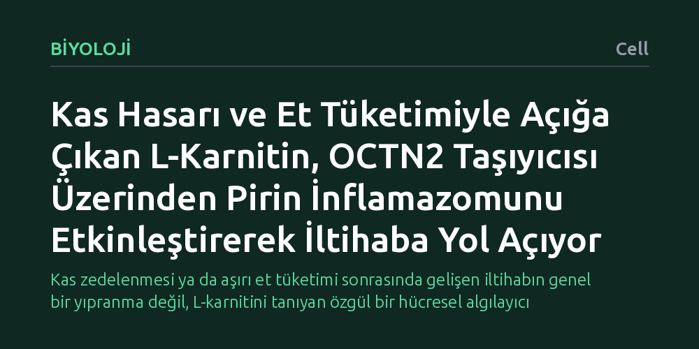

BIYOLOJI · Cell · 2026-10-21
Araştırmacılar, kas yıkımı ve et tüketimiyle kanda yükselen L-karnitinin bağışıklık sisteminde nasıl iltihap başlattığını araştırdı. Hücre dışı L-karnitinin OCTN2 taşıyıcısıyla emilerek pirin inflamazomunu doğrudan uyardığı ve IL-1β kaynaklı sistemik iltihaba yol açtığı saptandı.
Kas zedelenmesi ya da aşırı et tüketimi sonrasında gelişen iltihabın genel bir yıpranma değil, L-karnitini tanıyan özgül bir hücresel algılayıcı mekanizma üzerinden tetiklendiğini gösteriyor.

Kas dokusu, vücutta L-karnitin adlı bileşiğin en yoğun depolandığı yerdir. Gerek ağır travma ve egzersiz sonucu gelişen kas zedelenmeleri gerekse kas dokusunun besin olarak aşırı tüketilmesi, tıp dünyasında uzun süredir sistemik iltihaplanma ile ilişkilendirilmektedir. Ancak kas hücresinin içinde normal şartlarda enerji metabolizmasında görev alan bu molekülün, hücre dışına döküldüğünde bağışıklık sistemini tam olarak nasıl harekete geçirdiği bilinmiyordu.
Bağışıklık sistemimizin doku hasarını algılayıp tepki vermesi hayati bir koruma mekanizmasıdır; fakat bu yanıt kontrolsüzleştiğinde kronik iltihaba ve damar harabiyetine yol açabilir. Araştırmacılar, hücre dışına çıkan serbest L-karnitinin pasif bir yıkım artığı mı olduğunu, yoksa bağışıklık hücrelerince doğrudan algılanan özgül bir tehlike sinyali gibi mi davrandığını çözmeyi amaçladı.
Araştırma ekibi, bağışıklık hücrelerinin hücre dışındaki serbest L-karnitini nasıl tespit ettiğini aydınlatmak için makrofaj hücreleri üzerinde odaklandı. Genetik olarak hedeflenmiş fare modelleri ve hücre kültürü sistemleri kullanılarak, hücresel taşıyıcılar ile iltihap tetikleyici moleküler yapılar adım adım incelendi.
Deneylerde özellikle hücre zarlarında karnitin taşınmasından sorumlu olan yüksek afiniteli OCTN2 (SLC22A5) taşıyıcısının ve bağışıklık sisteminin moleküler sensörlerinden pirin inflamazomunun işlevi analiz edildi. Hücre dışındaki serbest L-karnitinin içeri alınma süreci ve bunun ardından tetiklenen interlökin-1 beta (IL-1β) salınımı biyokimyasal yöntemlerle takip edildi.
Elde edilen bulgular, hücre dışı L-karnitinin bağışıklık hücrelerince rastgele emilmediğini, OCTN2 adlı özgül taşıyıcı aracılığıyla içeri alındığını gösterdi. Hücre içine giren L-karnitin, hücre içindeki bir tehlike algılayıcısı olan pirin inflamazomunu doğrudan uyararak aktif hale getiriyordu.
Aktifleşen pirin inflamazomunun ise güçlü bir iltihap habercisi olan IL-1β proteininin salınmasına yol açtığı belirlendi. Böylece gerek kas yıkımı sırasında hücrelerin parçalanmasıyla dökülen, gerekse beslenme yoluyla dolaşıma katılan L-karnitinin, bağışıklık sisteminde sistemik iltihabı hangi mekanizma üzerinden başlattığı ilk kez net bir biçimde haritalandırıldı.
Bu moleküler mekanizmanın aydınlatılması, hem kas zedelenmelerinde hem de metabolik iltihaplanma süreçlerinde OCTN2 taşıyıcısının hedefe yönelik yeni tedaviler için umut vaat eden bir odak olabileceğini gösteriyor. Hücre dışı L-karnitinin bağışıklık hücrelerine girişini engelleyecek yaklaşımlar, kontrolsüz iltihap yanıtını ve buna bağlı doku hasarını dindirebilir.
Öte yandan, L-karnitinin hücresel enerji metabolizmasındaki temel ve vazgeçilmez işlevleri göz önünde bulundurulduğunda, bu taşıyıcı sistemin tamamen engellenmesinin yaratabileceği metabolik yan etkilerin dikkatle incelenmesi gerekmektedir. Gelecekte yürütülecek çalışmalar, bu yolak üzerinden geliştirilecek tedavilerin klinik güvenliğini ve uygulanabilirliğini netleştirecektir.